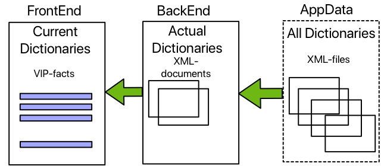

Copyright (c) Prolog
Developemnt Center SPb
Application Frame. Dictionary
Support
Typically, the user
interface uses headings and texts that are part of the codes. During operation, users
critically evaluate the decisions made by the developer about certain
names, phrases, etc.
The AppFrame
provides the ability to change the content of text elements during
operation. Moreover, it is possible to
use different languages. This property of the AppFrame is provided with the ability to support dictionaries,
which can be changed in the application.
The need to use
dictionaries is set in the application configuration Bin\<application
name>AppData\Options.xml node
<fe_options>.<group>.<language> attribute use-dictionary .
If the application
configuration determines that dictionaries are not used, then the
entire dictionary mechanism is blocked and the application uses the
text values set in the application code.
Dictionary file structure
The dictionary outside the
application is an XML file whose structure is presented below
<? Xml version =
"1.0" encoding = "UTF-8" standalone = "yes"?>
<language namespace
= "basic" version = "06/10/2019">
<
language_list dk = "Danish" eng = "English" rus = "Russian" />
<row id =
"ribbon.default.section.basic" meaning = "Help Section with About and
Features commands">
<dk> Help </ dk >
<rus> Help </rus>
<eng> Help </eng>
</row>
<row id =
"ribbon.default.section.basic.tooltip" meaning =
"Ribbon.Section.Default tooltip, when no ribbon file exists ">
<dk>The Help </ dk>
<rus> Help </ rus>
<eng> the Help </ eng>
</
row>
...
Attribute namespace of the node language defines the namespace name ( "basic" in this case). The version attribute specifies the name of the
version of the dictionary formation rules. The name of the version is
represented by the date when these rules were developed and applied ( "10.06.2019" in this case).
The language_list node lists the
languages that the basic namespace supports. Moreover, the name of the
attribute (as in this case - eng , dk , rus ) shows how the language is
indicated for the corresponding representation of the phrase. The language attribute
values are explanatory.
Each row nodedefines one phrase. The id attribute of row is the id of the
phrase. The meaning attribute defines the
semantic content of the phrase and what this phrase refers to in the
user interface. Formal rules for the
attribute attribute meaning are not established - this is
the text whose meaning is determined by the user or developer. The phrase identifier can
be any text value, although a structured representation is accepted in
the core of the AppFrame.
The subnodes of the row node list how the phrase should
look in the corresponding language. If there is only one
language, then the subnode for this language must still exist.
Editing the contents of the
dictionary file, during the operation of the application, you can take
into account the stylistic preferences of the user.
The general scheme of
working with dictionaries
The general scheme of
working with dictionaries looks like this.

Dictionary files in the xml
representation are stored in the xxxAppData directory of the
application. Every UI
component "knows" the name of the file, which contains its namespace , and the name itself namespace .
When the application
starts, if the configuration uses dictionaries, the FrontEnd of the
application determines which namespace is required for the current
content of the user interface.
FrontEnd and BackEnd know
which user interface language is currently working (current).
- For each namespace,
as it is to be used, FrontEnd calls BackEnd to download the
corresponding file.
- BackEnd loads into its
memory a full copy of the requested dictionary in the form of an xml
document (for all languages) and responds with a notification that the
dictionary is ready.
- FrontEnd then queries
BackEnd for the dictionary for the current language.
- BackEnd collects terms in
the format <phrase identifier> - <phrase
value> for the current language and returns them to FrontEnd as
a list.
- FrontEnd forms a fact base
for the corresponding namespace .
FrontEnd uses the current
fact base for the current language. If the user interface
language changes, FrontEnd destroys the current facts database, calls
BackEnd for the facts of the current language, and the process proceeds
as described above.
If FrontEnd updates a new
user interface element (for example, a form or dialog), then the same
mechanism works. When the form or dialog
becomes irrelevant, FrontEnd can delete the database of relevant facts
and contact BackEnd with the request to delete the corresponding
dictionary.
Thus, dictionaries can be
updated and deleted as needed or remain relevant while the application
is active.
If the application
configuration determines that dictionaries are not used, then the
entire dictionary mechanism is blocked and the application uses the
text values set in the application code.
On the BackEnd side, all dictionary operations
are provided by an object of the be_Dictionary class .
On the FrontEnd side, all dictionary operations
are provided by an object of class fe_Dictionary .
AppFrame always updates namespace
"basic" at startup and uses the file basic_Dictionary.xml .
If the application
developer does not want to create dynamically loaded dictionaries, he
can use only one dictionary, which contains all the phrases of the
application.
If the file basic_Dictionary.xml is not present, then the
namespace "basic" inside FrontEnd is created for only one basic
language from the facts stored in the package Common\AppFrontEnd\defaultDictionary\defaultDictionary.pack . The file basic_Dictionary.xml is automatically created
for the possibility of subsequent modification.
It should be noted that if
for a given namespace If
a dictionary exists as an XML file, the XML file will be checked for
compliance with the set of identifiers. If it is discovered that a
new identifier is being used, it will be added to the dictionary file
and values will be added for all supported languages. Phrases for languages
other than the base language will repeat the meaning of the base
language. The user can then edit all
phrases for all languages.
Implementation and
Application Details
One of the possibilities of
maintaining the dictionary is to maintain the package files of the
package of the base dictionary Common \ AppFrontEnd \
defaultDictionary \ defaultDictionary.pack.
Here it is important to
represent the package data structure.
The basic information can
be found in the files defaultDictionary .i and defaultDictionary.pro The file defaultDictionary.i recorded constant
identifiers text phrases
constants
ribbon_default_section_basic_C = "ribbon.default.section.basic".
ribbon_default_section_basic_tooltip_C = "ribbon.default.section.basic.tooltip".
The file defaultDictionary.pro recorded:
the name of the namespace and
the name of the dictionary file. Both of these are
fact-variable properties, that is, they are accessible through an
interface.
facts
nameSpace_P : string : = "basic" .
fileName_P : string : = @ "xxxAppData\basic_Dictionary.xml" .
and then the actual
definitions of phrases having these identifiers defined in the file defaultDictionary.i .
facts
item_F : ( string ItemID , string ItemString , string Meaning ).
clauses
item_F ( ribbon_default_section_basic_C , "Help" , "Help Section with About
and Features commands" ).
item_F ( ribbon_default_section_basic_tooltip_C , "Help" , "Ribbon.Section.Default
tooltip, when no ribbon file exists" ).
This is enough to create
and use it in the process of program operation if there is no
dictionary file.
Download and use
dictionaries
In order for BackEnd to
load the required dictionary from the XML file,
FrontEnd uses the predicate add_DictionaryNameSpace :( string NameSpace , string DictionaryXmlFile ).
Then the necessary
dictionary will appear both in the object of the be_Dictionary class and in the object of the fe_Dictionary class (for the current language).
In addition, a dictionary
already loaded in BackEnd can be requested by the predicate
fe_CoreTasks () from the FrontEnd
side : getDictionary (< NameSpace >)
Finally, by the predicate
fe_CoreTasks (): getDictionary ( )
all dictionaries loaded
into the BackEnd will
be loaded into FrontEnd in the class object fe_Dictionary
As a result, the desired
dictionary for the current language appears in the object of the fe_Dictionary class and obtaining the phrase is
performed by the
simplest query
Phrase = fe_Dictionary (): getStringByKey ( string :: concat (< NameSpace > , @ "\" , <phrase
identifier> ), <default value
> )
Here, a call is made to thefe_Dictionaryobject, and<NameSpace> \
isused as a prefix in the
text identifier.
The last predicate parameter getStringByKey sets
the default value that will be used if the definition of the text
fragment by the given identifier is not found in the dictionary.
Procedure for UI elements
included in the project code and having a special dictionary definition
class for a given element.
To use the dictionaries of
the components built into the code, a dictionary package must first be
created (if it is no longer in the
form of an XML file).
For this purpose, the SpbVipTools \ AppData \
SourceTemplates \ spbDictionary \ SpbDictionary.pack dictionary
class template
that can be used to create
dictionaries of any built-in entities is included in the Application
Frame .
As an example, let's take a
look at a not-so-simple procedure for creating a personal dictionary
for a user interface element of the Dialog class (the dictionary package optionsDlg_Dictionary.pack
has already been created ).
In the dialog itself,
creating an object leads to the creation of an object of a specific
dictionary and saving it here
new(Parent, FrontEnd, _SettingsList) :-
fe_Connector::new(FrontEnd),
dialog::new(Parent),
generatedInitialize(),
coreDictionary_P:=optionsDlg_Dictionary::new(). <- a dictionary
object is created
And
here is how this dialog is created and used externally:
clauses
editOptions(PerformParams):-
Dialog=fe_Options::new(convert(window,fe_AppWindow()),frontEnd_P,PerformParams),
% prepearing the dictionary for the dialog
Dialog:dictionary_P:=fe_Dictionary(), <-
fe_CoreTasks():initCoreDictionary(Dialog:coreDictionary_P), <-
load/create dictionary from BackEnd
Dialog:initData(), <- all text titles are set here
Dialog:show().
While loading dictionary from BackEnd: if dictionary not exists, then BackEnd will requests the list of facts of the
dictionary from the created dialog and will create the dictionary.
In the dialog object using
the loaded dictionary with the predicate initData(), text
phrases will be arranged on UI elements.
clauses
initData():-
if fe_Dictionary():useDictionary_P=useDictionaryNo_C then
% If dictionary not in use, then nothing done
else
NameSpace=coreDictionary_P:nameSpace_P,
setText(fe_Dictionary():getStringByKey(string::concat(NameSpace,@"\",dialog_options_title_C),"Options")),
cancel_ctl:setText(fe_Dictionary():getStringByKey(string::concat(NameSpace,@"\",dialog_options_pb_Cancel_C),"Cancel")),
ok_ctl:setText(fe_Dictionary():getStringByKey(string::concat(NameSpace,@"\",dialog_options_pb_ok_C),"Ok"))
end if.
In the initData() predicate, the controls (in this case, the
header and the Cancel and Ok buttons ) are set to new text
values.